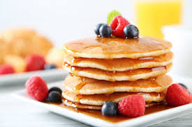
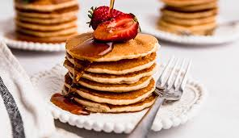
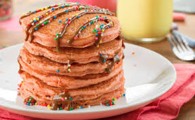
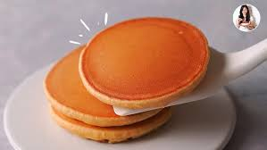
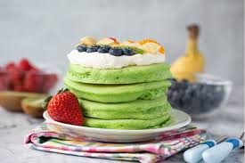

HOT CAKES

DESCRIPCION
son un pan plano, redondo y suave que se elabora con una masa de harina, huevos, leche y azúcar, cocinada en una sartén caliente hasta que esté dorada.
QUE TIPO DE COMIDA ES
son un tipo de comida de desayuno que se considera una versión más gruesa y esponjosa de los panqueques o crepas.
SABOR
van desde los clásicos con frutas o chocolate hasta opciones más creativas con especias o vegetales.
TEXTURA
Para lograr una textura de hot cakes ideal, es importante que sean suaves, esponjosos y ligeros.
TIPOS
Hot cakes esponjosos. ... Hot cakes light. ... Hot cakes de avena con plátano. ... Hot cakes japoneses esponjosos. ... Hot cakes esponjosos rellenos. ... Hot cakes de rol de canela. ... Mini hot cakes con forma de corazón. ... Hot cakes de calabaza.
| INCREDIENTES CLAVE | PROCESO | SUGERENCIA ADICIONAL |
| Harina para Hot Cakes | Mezclar sin batir en exceso | Evita que los hot cakes queden duros |
| Leche | Agregar gradualmente | Facilita una mezcla homogénea |